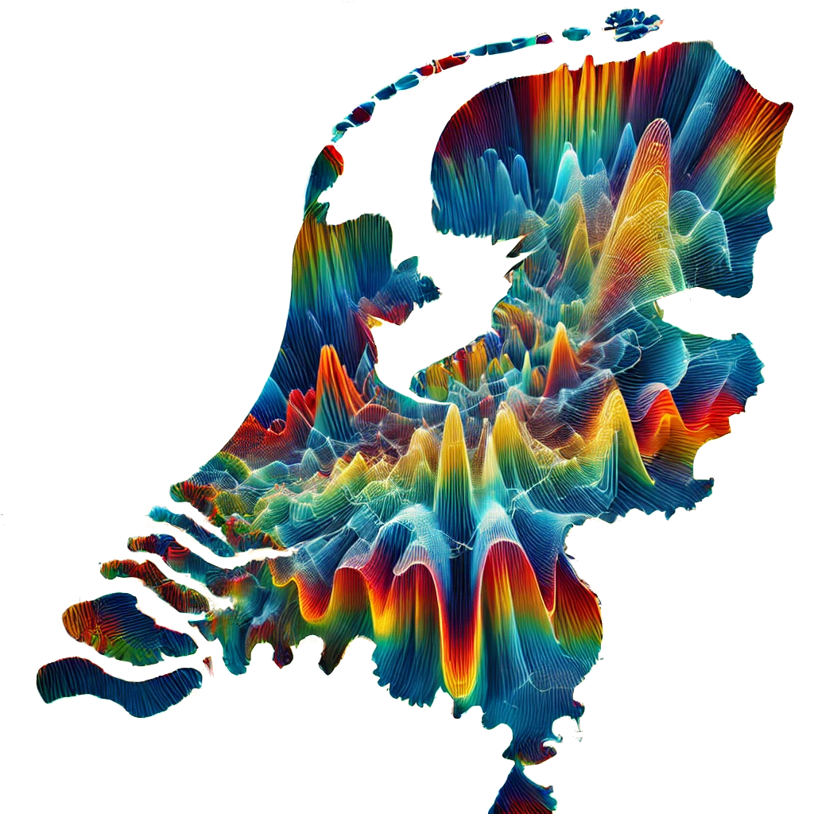

A one-day meeting bringing together academic researchers and Dutch industry partners to explore how wave phenomena shape science and engineering.
Date: 25 August 2026, 12:00–17:00
Location: TU Delft — Aula Congresscentrum
Registration: free of charge, but seats are limited — deadline July 15th; register here

Participating Organisations
ASML · TNO · Marin · Alliander · NLR
Programme
| Time | Activity |
|---|---|
| 12:00 | Welcome & lunch |
| 12:30 | Harmen van der Ven (NLR) — The selection of algorithms for the large-scale solution of boundary integral equations |
| 13:00 | Sander Rieken (Alliander) |
| 13:30 | Stefania Monni (TNO) |
| 14:00 | Mario Echeverri Bautista (TNO) — When EM Waves Meet Uncertainty: Understanding Stochastic System Responses |
| 14:30 | Coffee break |
| 14:45 | Arjen Koop (Marin) — High‑Fidelity CFD for Performance Assessment of Maritime Structures in Waves |
| 15:15 | Mark van Kraaij (ASML) — Computational electromagnetics in holistic lithography |
| 15:45 | Poster session |
| 16:30 | Drinks & food |
Abstracts
Harmen van der Ven (NLR)
The selection of algorithms for the large-scale solution of boundary integral equations
For homogeneous media, the Maxwell equations are best solved when formulated as boundary integral equations. The multi-level fast-multipole algorithm renders the solution of the dense matrix system feasible. In the actual design and implementation, a lot of choices remain; some good, some bad. Making the right choice from the vast scientific literature is no easy task for the mathematical engineer. In this short talk, experiences with different algorithmic components for the large-scale solution of the equations are shared; where the number of unknowns is typically in the range of one hundred million.
Mario Echeverri Bautista (TNO)
When EM Waves Meet Uncertainty: Understanding Stochastic System Responses
The response of electronic systems to electromagnetic (EM) waves is an increasingly relevant topic in today's technology-driven society. Advances in electronics have enabled lower power consumption, greater computational capabilities, and ever more compact devices, leading to the widespread adoption of technologies such as wearables, smart homes, autonomous systems, and industrial automation.
As electronic systems become more pervasive, they are exposed to increasingly complex and congested electromagnetic environments. This creates conditions that can enhance unintended interactions between EM waves and electronic systems, commonly referred to as Electromagnetic Interference (EMI). Understanding EMI requires identifying the mechanisms through which electromagnetic energy couples into a system and developing models capable of predicting potential vulnerabilities during the design phase.
Traditional EMI analysis relies on deterministic models. A system is described through its geometry, materials, and operating conditions; an excitation source is defined; and numerical or analytical methods are used to predict quantities of interest, such as voltages or currents within the system.
Real-world systems, however, are not deterministic. Manufacturing tolerances, material variability, environmental conditions, and aging introduce uncertainty into both the system and its response. As a result, the quantities of interest are more appropriately described by probability distributions than by single values. Of particular interest are rare but potentially critical responses, whose accurate estimation can become computationally prohibitive when relying on conventional Monte Carlo approaches.
In this talk, we will explore how uncertainty enters electromagnetic wave–system interactions and discuss the challenges associated with estimating low-probability, high-impact events. We will then introduce importance sampling as a strategy to efficiently characterize the tails of response distributions and illustrate its application to electromagnetic interference problems.
Arjen Koop (Marin)
High‑Fidelity CFD for Performance Assessment of Maritime Structures in Waves
High‑fidelity Computational Fluid Dynamics (CFD) has evolved into a robust, accurate and predictive method for resolving the nonlinear hydrodynamics governing maritime structures in operational and extreme wave environments. This presentation highlights the current state‑of‑the‑art of CFD for quantifying motions, wave‑induced loads, and local free‑surface phenomena for typical maritime applications. Three representative case studies are examined: low‑frequency motion response of an offshore drilling semi‑submersible; the global performance of a floating wind turbine platform in irregular waves; and green‑water impact loads on a ship operating in severe wave conditions. The results highlight CFD's capability to accurately capture complex wave–structure interactions that are often beyond the reach of potential‑flow or mid‑fidelity models. These findings underscore the role of high‑fidelity CFD as both a design‑support tool for engineering decision‑making and a source of high‑quality benchmark data for the calibration and validation of reduced‑order simulation methods.
Mark van Kraaij (ASML)
Computational electromagnetics in holistic lithography
Lithography technology is fundamental to mass producing semiconductor chips. At ASML, extreme ultraviolet (EUV) lithography systems provide the highest resolution for high-volume manufacturing. In this talk we will focus on two areas, optical metrology and computational lithography, that enable holistic EUV lithography. Both areas have a strong foundation in computational electromagnetics. Maxwell solvers (or fast surrogate models) are employed to solve various wave propagation problems. We will discuss some of its computational challenges, solutions, and open problems.